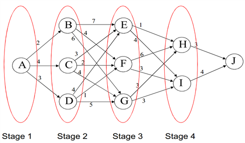

단계별로 순차적으로 구성된 문제가 있다고 하자.[30] 원 문제를 맨 뒷 단계(또는 맨 처음 단계)부터 시작하는 현 단계와 이웃 단계로 구성된 작은 문제로 쪼개고 작은 문제의 해를 구한 다음 그것들의 순차적인 성질을 이용하여 다음 단계를 결합해 결합된 새로운 문제의 해를 풀고, 결과적으로 전체 단계로 구성된 원 문제의 해를 구하는 방법.
문제를 동적계획기법으로 풀기 위해서는 두 가지 전제조건이 필요하다.
첫째는 각 기간(단계)의 성과는 그 기간에 취해진 결정과 당기의 상태에만 의존한다. 각 단계는 다수의 상태로 구성되고 각 단계에서 취해진 결정은 현 상태를 다음 단계의 상태로 변화시킨다. 시간으로 구성된 문제일 경우 이는 시스템이 마르코브(Markov) 특성을 갖는다는 의미이다.[31] 이는 제약식을 구성하는 미분방정식 또는 차분방정식이 자생적이란 의미이다.
둘째는 목적함수가 시간 분할적(또는 각 단계가 구분)이어야 한다.[32]
이 두 특성은 문제를 순차적으로 만들어 동적계획법으로 풀 수 있게 한다.
최적정책은 초기 상태와 최초의 의사결정이 무엇이든 간에,
그 최초 결정의 결과로 주어진 상태에서 이후의 의사결정들이 다시 최적정책을 구성해야 한다는 성질을 갖는다.
확정적 동적계획(determinstic dynamic programming)
예) 최단거리 경로문제(shortest path problem)

위와 같은 여행경로를 갖는 문제를 고려하자. 그림의 숫자는 각 지역간의 거리를 의미한다. 여행자는 A에서 J까지 가는 가장 빠른 경로를 구하는 것이 문제이다. 이를 동적계획법을 이용해서 풀어라.
(풀이)
1)
먼저 가장 마지막 단계의 전단계인 단계4에서 시작한다. 단계 n에서 상태변수를 y_{n}이라 하고 단계 n의 상태 y_{n}에서 마지막 단계까지 가는 최단거리를 V_{n} (y_{n} )라 하면, y_{4}는 H, I 두 상태로 구성되어 있고, y_{5}는 J 한 상태로 구성되어 있다.
D(y_{4} \, \to \,y_{5} )를 y_{4}에서 y_{5}로 가는 거리라고 하면 y_{4}에서 y_{5}로 가는 최단거리 V_{4} (y_{4} )는 다음과 같다.
V_{4} (y_{4} )\,=\,\min\, \left\{ D(y_{4} \, \to \,y_{5} ) \right\}
상태 H일 경우 : H에서 J로 가는 최단거리는 3이므로 V_{4} (H)\,=\,3
상태 I일 경우 : I에서 J로 가는 최단거리는 4이므로 V_{4} (I)\,=\,4
이를 표로 표시하면
y_{4} | y_{5} | V_{4} (y_{4} ) |
H | J | 3 |
I | J | 4 |
2)
단계3에서 단계4의 각 상태로 가는 경로에 단계4 이후의 최단거리를 더한 값 중에서 최단거리를 구한다.
V_{3} (y_{3} )\,=\,\min\, \left\{ D(y_{3} \, \to \,y_{4} )\,+\,V_{4} (y_{4} ) \right\}
상태 E일 경우 :
EH + HJ = 1 + 3 = 4
EI + IJ = 4 + 4 = 8
따라서 E에서 시작할 때 최단경로는 EHJ, 최단거리는 V_{3} (E) = 4
상태 F일 경우 :
FH + HJ = 6 + 3 = 9
FI + IJ = 3 + 4 = 7
따라서 F에서 시작할 때 최단경로는 FIJ, 최단거리는 V_{3} (F) = 7
상태 G일 경우 :
GH + HJ = 3 + 3 = 6
GI + IJ = 3 + 4 = 7
따라서 G에서 시작할 때 최단경로는 GHJ, 최단거리는 V_{3} (G) = 6
이를 표로 표시하면
y_{3} | y_{4} | V_{3} (y_{3} ) |
E | H | 4 |
F | I | 7 |
G | H | 6 |
3)
단계2에서 단계3의 각 상태로 가는 경로에 단계3 이후의 최단거리를 더한 값 중 최단거리를 구하는 것이다.
V_{2} (y_{2} )\,=\,\min\, \left\{ D(y_{2} \, \to \,y_{3} )\,+\,V_{3} (y_{3} ) \right\}
상태 B일 경우 :
BE + EH = 7 + 4 = 11
BF + FI = 4 + 7 = 11
BG + GH = 6 + 6 = 12
따라서 B에서 시작할 때 최단경로는 BEH, BFI, 최단거리는 V_{2} (B) = 11
상태 C일 경우 :
CE + EH = 3 + 4 = 7
CF + FI = 2 + 7 = 9
CG + GH = 4 + 6 = 10
따라서 C에서 시작할 때 최단경로는 CEH, 최단거리는 V_{2} (C) = 7
상태 D일 경우 :
DE + EH = 4 + 4 = 8
DF + FI = 1 + 7 = 9
DG + GH = 5 + 6 = 11
따라서 D에서 시작할 때 최단경로는 DEH, 최단거리는 V_{2} (D)= 8
이를 표로 표시하면
y_{2} | y_{3} | y_{4} | V_{2} (y_{2} ) |
B | E | H | 11 |
F | I | ||
C | E | H | 7 |
D | E | H | 8 |
4)
단계1에서 단계2의 각 상태로 가는 경로에 단계2의 최단거리를 더한 값 중 최단거리를 구하는 것이다.
V_{1} (y_{1} )\,=\,\min\, \left\{ D(y_{1} \, \to \,y_{2} )\,+\,V_{2} (y_{2} ) \right\}
AB + BI = 2 + 11 = 13
AC + CH = 4 + 7 = 11
AD + DH = 3 + 8 = 11
따라서 A에서 시작할 때 최단경로는 ACH, ADH, 최단거리는 V_{1} (A) = 11
이를 표로 표시하면
y_{1} | y_{2} | y_{3} | y_{4} | V_{1} (y_{1} ) |
A | C | E | H | 11 |
D | E | H | 11 |
따라서 최적경로는 ACEH, ADEH 두 가지로 이때의 최단거리는 11이다.
(풀이끝)
최단거리 여행경로 설정과 같이 각 단계는 반드시 시간을 의미하지 않는다.
↩‘마르코브 체인’ 참조
↩문제의 나머지 부분에 대한 최적해가
이전 단계에서 내린 결정에 의존한다면 동적계획법을 적용할 수 없다.
↩← 처음 · 절별 목차 · 이산시간 동적계획과 유한기간 →